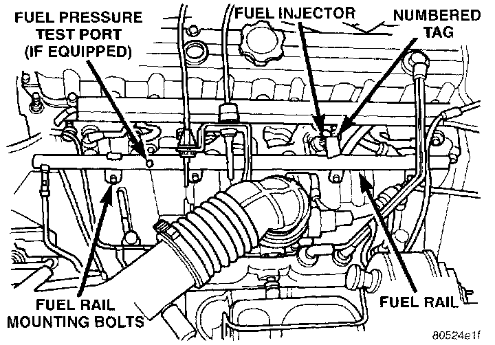

Fuel Injector: Description and Operation
Fig. 5 Fuel Injectors & Rail:

Six individual fuel injectors are used with this engine. The injectors are attached to the fuel rail (Fig. 5).
The nozzle ends of the injectors are positioned into openings in the intake manifold just above the intake valve ports of the cylinder head. The engine wiring harness connector for each fuel injector is equipped with an attached numerical tag (INJ 1, INJ 2 etc.). This is used to identify each fuel injector.
The injectors are energized individually in a sequential order by the Powertrain Control Module (PCM). The PCM will adjust injector pulse width by switching the ground path to each individual injector on and off. Injector pulse width is the period of time that the injector is energized. The PCM will adjust injector pulse width based on various inputs it receives.
During start up, battery voltage is supplied to the injectors through the Automatic Shutdown (ASD) relay. When the engine is operating, voltage is supplied by the charging system. The PCM determines injector pulse width based on various inputs.
CIRCUIT OPERATION
When the Automatic Shut Down (ASD) relay contacts close, they connect circuits F5 and A142. Circuit A142 supplies voltage to the fuel injectors. Each injector has a separate ground circuit controlled by the Powertrain Control Module (PCM).
Circuit K11 provides ground for injector number one. The K11 circuit connects to cavity E4 of the PCM.
Circuit K12 provides ground for injector number two. The K12 circuit connects to cavity B15 of the PCM.
Circuit K13 provides ground for injector number three. The K13 circuit connects to cavity B5 of the PCM.
Circuit K14 provides ground for injector number four. The K14 circuit connects to cavity B16 of the PCM.
Circuit K38 provides ground for injector number five. The K38 circuit connects to cavity B6 of the PCM.
Circuit K58 provides ground for injector number six. The K58 circuit connects to cavity B12 of the PCM.